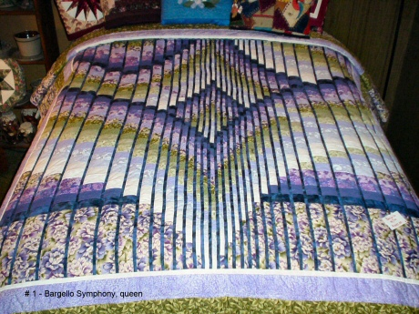

Links

We carry a large selection of locally crafted calls for:
Turkey
Deer
Goose
Duck
Elk
Coyote
Predator
Owl Hoots
These are some examples of the calls we carry.
We have a large selection in many types of hardwood.
Home | Contact us | Quilts | Calls |